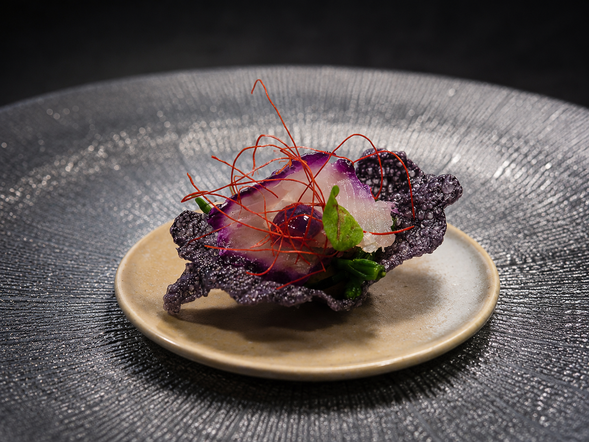

Tagliere di salumi di mare
18,00 €Nostra produzione, confetture di frutta e verdura homemade, crostini di pane ai 7 cereali, rivisitazione di giardiniera.
Carta ufficiale
Antipasti, primi e secondi tratti dal Menu Coralì Esterno.

In apertura
Nostra produzione, confetture di frutta e verdura homemade, crostini di pane ai 7 cereali, rivisitazione di giardiniera.
Ripiena di burrata affumicata e lime, sfoglie di bottarga di Cabras, carciofo in oliocottura, polvere di pomodori camoni.
Calamaro del mediterraneo scottato al vapore ripieno di tartare di tonno, olive taggiasche e pinoli tostati, aria all'aneto e riduzione di datterino giallo.
Nuvola di pane, confettura di cipolla rossa, polvere di olive nere e caviale al basilico.
Su fondutina al raschera tartufato, puntarelle croccanti, cialda di pasta fillo e semi di papavero.
Salsa tonnata all'antica, fiori di cappero, cialda di riso soffiato alla barbabietola, germogli, aria di cipolla di Tropea.
Paste e riso
Crema di uovo cotto a bassa temperatura, pepe nero tostato, porri croccanti e julienne di pecorino romano DOP.
Erbe e aglio nero, scorza di lime, lime candito, vongole veraci e cristalli di prezzemolo.
Salicornia e salmone confit, nocciole tostate e finocchietto in due consistenze.
Nostra produzione, salsa di noci, julienne di crudo di Parma croccante, scaglie di reggiano DOP e crumble di noci.
Dalla cucina
Affumicati al rosmarino e legno di mandorlo, petali di cipolla rossa marinata, caponatina di melanzane e salsa teriyaki.
Crudo di carciofi e bottarga, fondente di patate al nero, gel di lamponi.
Le sue verdure, polentina arrostita, aria di cipolla rossa.
Con il suo fondo bruno, pinoli, olive riviera, guanciale croccante, pomodorino confit e spuma al basilico cotta e cruda.
Cantina
La carta vini è disponibile come pagina dedicata, con bianchi, rosé, bollicine e rossi organizzati per sezione.